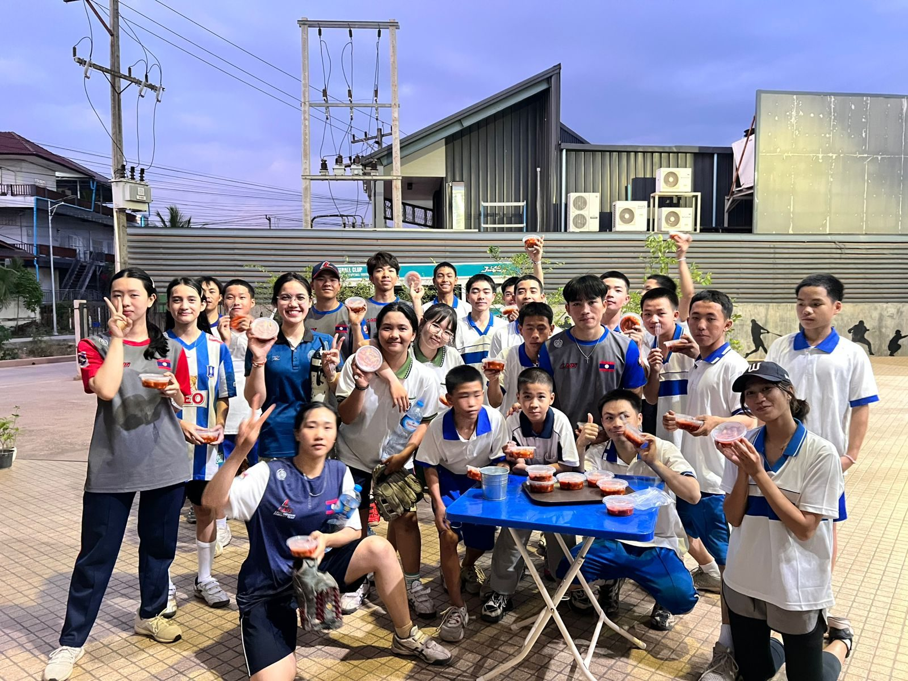
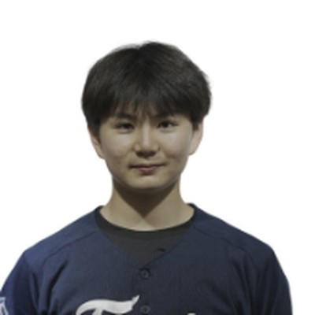

Co-President
Laos National Baseball Team
A young team with big dreams.
Baseball is still new in Laos. The players we support train with limited equipment, facilities, and nutrition — and keep showing up anyway.
Their Story
Built from the ground up.
Organized baseball in Laos began in the 2010s, when Korean volunteers — including former KBO player and manager Lee Man-soo — helped found the Lao Baseball Association, recruit players, and build the country's first baseball field.
Since then, the national team has grown from losing heavily at its Asian Games debut to winning its first international games. What they still need most is steady support: good meals, equipment, and a stable training environment.
Milestones
How far they've come
2018
Asian Games debut in Jakarta — the team's first major international tournament.
2019
The Lao Baseball Federation becomes a member of the World Baseball Softball Confederation (WBSC).
2023
First international wins at the East Asian Baseball Cup (vs. Cambodia and Malaysia), and a win over Singapore at the Hangzhou Asian Games.

Why We Help
Players can't train on an empty stomach.
Base on Hope focuses on one concrete need: meals. The funds we raise through our classes and fundraisers are sent to the team's coach to support players' meals and training, and we check in with the team to see the difference it makes.
Support the TeamWho We Are
Founders

Co-President
Gyumin Jeong
정규민
Vice President
Minseo Park
박민서Departments
Field Fundraising
Seungwon Oh
Nationwide baseball stadium tour.
Treasury
Yena Chae
Records all income and spending, manages transfers to the Laos team, and prepares financial reports.
PR & Design
Yeryung Kim
Instagram, posters, T-shirts, logo and visual identity, photo and video content.
Planning & Management
Recruiting
Schedules, long-term planning, partner relations, and fundraiser planning.
Secretary / Documentation
Recruiting
Meeting minutes, activity records, and archiving our history.
Coaching
Suhyun Park · Seungwon Oh · Eden Je
Student coaches for the BOH Baseball Class, with head coach Kim Dongmin.